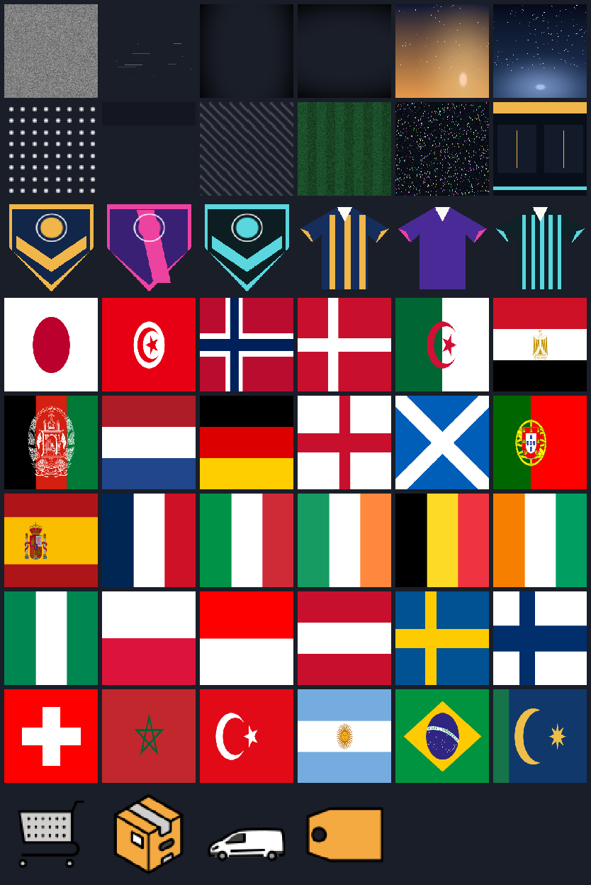
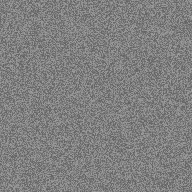

Tout ce que le studio sait produire, à écouter et à regarder ici : les sons de la
banque (un lecteur par son, la commande de cue prête à copier), les bandes-son des films, leurs
bandes vocales avec le débit mesuré réplique par réplique, et les plaques d'images. Rien n'est
fabriqué à la volée : chaque fichier listé ici existe dans assets/, et la page se
régénère depuis les manifestes du studio.
76 sons jouables6 films sonorisés6 bandes vocales, 45 répliques mesurées60 plaques d'images46 recettes au cataloguevoix : français · Siwis (medium), français · Tom (medium)
La banque de sons 76 fichiers
Chaque recette de studio/voices.py rendue seule, à son niveau de master.
Les recettes qui lisent le rang du cue (les cordes, les ticks, les pastilles) ont leurs variantes :
de quoi ne pas répéter deux fois le même son dans un montage.
nappes & graves 14 sons
air9.00 s563 ko
["air"]assets/sfx/air.wav · 563 ko
choir5.00 s313 ko
["choir"]assets/sfx/choir.wav · 313 ko
choir5.00 s313 ko
["choir"]assets/sfx/choir-2.wav · 313 ko
choir5.00 s313 ko
["choir"]assets/sfx/choir-3.wav · 313 ko
choir5.00 s313 ko
["choir"]assets/sfx/choir-4.wav · 313 ko
choir5.00 s313 ko
["choir"]assets/sfx/choir-5.wav · 313 ko
pad6.00 s375 ko
["pad"]assets/sfx/pad.wav · 375 ko
pad6.00 s375 ko
["pad"]assets/sfx/pad-2.wav · 375 ko
pad6.00 s375 ko
["pad"]assets/sfx/pad-3.wav · 375 ko
pad6.00 s375 ko
["pad"]assets/sfx/pad-4.wav · 375 ko
pad6.00 s375 ko
["pad"]assets/sfx/pad-5.wav · 375 ko
resolve4.40 s275 ko
["resolve"]assets/sfx/resolve.wav · 275 ko
sub3.40 s213 ko
["sub"]assets/sfx/sub.wav · 213 ko
swell2.50 s156 ko
["swell"]assets/sfx/swell.wav · 156 ko
percussions & impacts 6 sons
impact0.90 s56 ko
["impact"]assets/sfx/impact.wav · 56 ko
impactSoft0.50 s31 ko
["impactSoft"]assets/sfx/impactSoft.wav · 31 ko
kick0.50 s31 ko
["kick"]assets/sfx/kick.wav · 31 ko
micThud0.32 s20 ko
["micThud"]assets/sfx/micThud.wav · 20 ko
stamp0.45 s28 ko
["stamp"]assets/sfx/stamp.wav · 28 ko
tom0.35 s22 ko
["tom"]assets/sfx/tom.wav · 22 ko
transitions & mouvements 7 sons
jerseyDrop0.18 s11 ko
["jerseyDrop"]assets/sfx/jerseyDrop.wav · 11 ko
plateWipe0.45 s28 ko
["plateWipe"]assets/sfx/plateWipe.wav · 28 ko
riser1.50 s94 ko
["riser"]assets/sfx/riser.wav · 94 ko
sweep1.80 s113 ko
["sweep"]assets/sfx/sweep.wav · 113 ko
whoosh1.15 s72 ko
["whoosh"]assets/sfx/whoosh.wav · 72 ko
whooshDeep1.60 s100 ko
["whooshDeep"]assets/sfx/whooshDeep.wav · 100 ko
whooshSoft1.40 s88 ko
["whooshSoft"]assets/sfx/whooshSoft.wav · 88 ko
cordes & cloches 13 sons
chime1.50 s94 ko
["chime"]assets/sfx/chime.wav · 94 ko
chordUp2.78 s174 ko
["chordUp"]assets/sfx/chordUp.wav · 174 ko
coinLand0.50 s31 ko
["coinLand"]assets/sfx/coinLand.wav · 31 ko
door0.34 s21 ko
["door"]assets/sfx/door.wav · 21 ko
pluck0.90 s56 ko
["pluck"]assets/sfx/pluck.wav · 56 ko
pluck0.90 s56 ko
["pluck"]assets/sfx/pluck-2.wav · 56 ko
pluck0.90 s56 ko
["pluck"]assets/sfx/pluck-3.wav · 56 ko
pluck0.90 s56 ko
["pluck"]assets/sfx/pluck-4.wav · 56 ko
pluck0.90 s56 ko
["pluck"]assets/sfx/pluck-5.wav · 56 ko
pluck0.90 s56 ko
["pluck"]assets/sfx/pluck-6.wav · 56 ko
rateDing1.30 s81 ko
["rateDing"]assets/sfx/rateDing.wav · 81 ko
shimmer2.20 s138 ko
["shimmer"]assets/sfx/shimmer.wav · 138 ko
sparkle1.10 s69 ko
["sparkle"]assets/sfx/sparkle.wav · 69 ko
interface 26 sons
benchPop0.40 s25 ko
["benchPop"]assets/sfx/benchPop.wav · 25 ko
benchPop0.40 s25 ko
["benchPop"]assets/sfx/benchPop-2.wav · 25 ko
benchPop0.40 s25 ko
["benchPop"]assets/sfx/benchPop-3.wav · 25 ko
benchPop0.40 s25 ko
["benchPop"]assets/sfx/benchPop-4.wav · 25 ko
benchPop0.40 s25 ko
["benchPop"]assets/sfx/benchPop-5.wav · 25 ko
benchTick0.07 s4 ko
["benchTick"]assets/sfx/benchTick.wav · 4 ko
benchTick0.07 s4 ko
["benchTick"]assets/sfx/benchTick-2.wav · 4 ko
benchTick0.07 s4 ko
["benchTick"]assets/sfx/benchTick-3.wav · 4 ko
blip0.12 s8 ko
["blip"]assets/sfx/blip.wav · 8 ko
blip0.12 s8 ko
["blip"]assets/sfx/blip-2.wav · 8 ko
blip0.12 s8 ko
["blip"]assets/sfx/blip-3.wav · 8 ko
chip0.16 s10 ko
["chip"]assets/sfx/chip.wav · 10 ko
coinTick0.10 s6 ko
["coinTick"]assets/sfx/coinTick.wav · 6 ko
coinTick0.10 s6 ko
["coinTick"]assets/sfx/coinTick-2.wav · 6 ko
coinTick0.10 s6 ko
["coinTick"]assets/sfx/coinTick-3.wav · 6 ko
coinTick0.10 s6 ko
["coinTick"]assets/sfx/coinTick-4.wav · 6 ko
coinTick0.10 s6 ko
["coinTick"]assets/sfx/coinTick-5.wav · 6 ko
flagPop0.12 s8 ko
["flagPop"]assets/sfx/flagPop.wav · 8 ko
jerseyLand0.28 s18 ko
["jerseyLand"]assets/sfx/jerseyLand.wav · 18 ko
rateTick0.08 s5 ko
["rateTick"]assets/sfx/rateTick.wav · 5 ko
rateTick0.08 s5 ko
["rateTick"]assets/sfx/rateTick-2.wav · 5 ko
rateTick0.08 s5 ko
["rateTick"]assets/sfx/rateTick-3.wav · 5 ko
trace0.18 s11 ko
["trace"]assets/sfx/trace.wav · 11 ko
trace0.18 s11 ko
["trace"]assets/sfx/trace-2.wav · 11 ko
trace0.18 s11 ko
["trace"]assets/sfx/trace-3.wav · 11 ko
trace0.18 s11 ko
["trace"]assets/sfx/trace-4.wav · 11 ko
mécanique 2 sons
engine10.40 s650 ko
["engine"]assets/sfx/engine.wav · 650 ko
ignite0.50 s31 ko
["ignite"]assets/sfx/ignite.wav · 31 ko
stade & foule 5 sons
crowd9.00 s563 ko
["crowd"]assets/sfx/crowd.wav · 563 ko
crowdGasp1.10 s69 ko
["crowdGasp"]assets/sfx/crowdGasp.wav · 69 ko
crowdOhh1.90 s119 ko
["crowdOhh"]assets/sfx/crowdOhh.wav · 119 ko
hush1.20 s75 ko
["hush"]assets/sfx/hush.wav · 75 ko
whistle0.55 s34 ko
["whistle"]assets/sfx/whistle.wav · 34 ko
studio & micro 3 sons
phoneBuzz0.43 s27 ko
["phoneBuzz"]assets/sfx/phoneBuzz.wav · 27 ko
squeak0.55 s34 ko
["squeak"]assets/sfx/squeak.wav · 34 ko
tada1.76 s110 ko
["tada"]assets/sfx/tada.wav · 110 ko
Les films bande + voix
Astan City
astan-city-xi.html · 43.4 s
bande-son 44.2 s · 119 sons · crête 0.90 · RMS 0.160 · 5.7 Mo
voix 8 répliques · français · Tom (medium) · débit moyen 2.40 mot/s · 2.8 Mo
les répliques mesurées
#
voix
mot/s
texte
1
2.92 s
2.40
Bonsoir à tous, Léonard Chose au micro.
2
3.52 s
2.56
Astan City dévoile son onze de départ, ce soir.
3
1.72 s
2.90
Et dans les buts, Sako!
4
4.99 s
1.80
La défense à quatre : Fouhez, Rolberg, Elhussin, Comistani.
5
5.93 s
1.69
Au milieu, Mikkelsen et Belmadi. Devant, Elke, Sholke et Dempsey!
6
1.79 s
2.23
Et Keytez en pointe!
7
2.79 s
2.87
Sur le banc, dix remplaçants prêts à entrer.
8
3.58 s
2.79
Astan City, onze de départ : quatre deux trois un.
Boby
boby-commentateur.html · 34.0 s
bande-son 34.8 s · 71 sons · crête 0.90 · RMS 0.170 · 4.5 Mo
voix 8 répliques · français · Tom (medium) · débit moyen 2.17 mot/s · 2.2 Mo
les répliques mesurées
#
voix
mot/s
texte
1
3.77 s
1.59
Bonsoir, bonsoir. Ici Boby, en direct.
2
3.15 s
1.90
Bienvenue sur, euh, sur notre antenne.
3
2.48 s
2.82
Donc ce soir, on commente... quel match.
4
3.87 s
1.29
Comistani. Enfin, Comistini... non, comestible.
5
3.18 s
1.26
Mikkelsen. Mik... Mike-les-sons, voilà.
6
2.92 s
2.39
Zéro partout, euh non, trois à zéro.
7
3.06 s
1.96
Aïe. J'ai lâché le micro, pardon.
8
1.68 s
4.17
Ce n'est pas moi, c'est le vent.
CS AXIUM
cs-axium-xi.html · 46.2 s
bande-son 47.0 s · 118 sons · crête 0.90 · RMS 0.170 · 6.0 Mo
voix 9 répliques · français · Tom (medium) · débit moyen 2.19 mot/s · 3.0 Mo
les répliques mesurées
#
voix
mot/s
texte
1
2.81 s
2.49
Bonsoir à tous, Léonard Chose au micro.
2
4.02 s
1.74
CS Axiom dévoile sa composition, ce soir.
3
1.82 s
2.75
Et dans les buts, Haddad!
4
4.56 s
1.75
La défense : Lot Istanois, Benali, Hernancio, Sanchez.
5
2.99 s
2.01
Mansouri en sentinelle, devant la défense.
6
5.76 s
1.91
Le Boucher, Gelarza, Von Istanoix, Caruso : ils alimentent l'attaque !
7
1.96 s
2.05
Et Saidi, en pointe!
8
2.94 s
2.72
Sur le banc, neuf remplaçants prêts à entrer.
9
3.84 s
2.35
CS Axiom, la composition : quatre un quatre un.
HEROBRINE
herobrine.html · 42.0 s
bande-son 42.8 s · 126 sons · crête 0.90 · RMS 0.180 · 5.5 Mo
voix 8 répliques · français · Tom (medium) · débit moyen 2.54 mot/s · 2.7 Mo
les répliques mesurées
#
voix
mot/s
texte
1
3.85 s
1.82
Nouveau monde. Survie. Seul, et sans personne.
2
3.29 s
3.35
La nuit tombe, et quelque chose me suit dans le noir.
3
3.33 s
2.10
Mes torches s'éteignent. Mes coffres sont vidés.
4
3.63 s
2.48
Un tunnel droit, creusé dans la pierre, sans porte.
5
3.65 s
2.47
En haut de la colline, une silhouette me regarde.
6
2.99 s
3.01
Deux yeux blancs. Il ne faut jamais le fixer.
7
3.07 s
2.60
Il vient d'entrer dans ma partie. J'ai peur.
8
2.78 s
2.52
Herobrine. Ce monde n'est plus à moi.
Litel
litel.html · 40.0 s
bande-son 40.8 s · 71 sons · crête 0.90 · RMS 0.168 · 5.2 Mo
voix 6 répliques · français · Tom (medium) · débit moyen 2.52 mot/s · 2.6 Mo
les répliques mesurées
#
voix
mot/s
texte
1
3.46 s
2.60
Litel ouvre ses portes : bienvenue dans le magasin.
2
3.40 s
2.65
Des petits prix dans tous les rayons, sans exception.
3
3.47 s
2.59
Cinq istancoins la boîte, et huit pour la deuxième.
4
2.65 s
3.02
Chaque lot est vérifié avant de partir d'ici.
5
3.43 s
2.04
Livraison en vingt-quatre heures, partout dans Istan.
6
3.12 s
2.24
Litel : des petits prix, grande qualité.
Nyxar N3
nyxar-n3.html · 37.0 s
bande-son 37.8 s · 60 sons · crête 0.90 · RMS 0.183 · 4.8 Mo
voix 6 répliques · français · Tom (medium) · débit moyen 2.15 mot/s · 2.4 Mo
les répliques mesurées
#
voix
mot/s
texte
1
3.89 s
1.80
Istanbul s'éveille. Et la Nyxar N3 arrive.
2
4.92 s
1.83
Voici la Nyxar N3, une berline familiale dessinée ici.
3
5.00 s
2.60
Cinq places, un grand coffre, et quatre virgule huit litres aux cent kilomètres.
4
3.67 s
2.72
Douze mille istancoins : c'est le prix de la N3.
5
3.79 s
2.11
Disponible à Istanbul, en Espagne et au Portugal.
6
4.30 s
1.86
Nyxar N3. La famille d'abord, la route ensuite.
Les plaques d'images 60 fichiers
la planche de contact — les 60 plaques d'un coup d'œil


grain-tilegrain monochrome à recouvrir, 192×192 · 192×192 · 57 ko